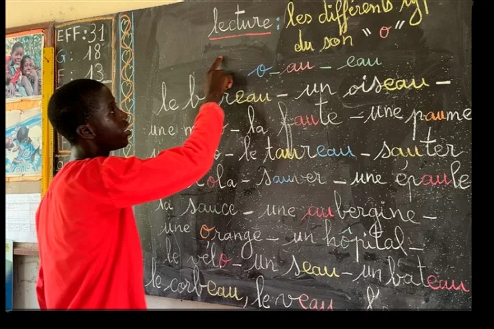

Abobo · Abidjan · Boli Kosta
Akwaba
etxea.
Zer behar du haur batek berriro seguru sentitzeko?
Ezagutu Aboboko harrera-etxea eta bertako hezitzaileek haur eta nerabeei nola laguntzen dieten.

- Entzutea
- Harrera eta babesa
- Hezkuntza
- Familia-loturak
Nor gara?
Etxe bat, aukera berri bat
Akwaba hitzak «ongi etorri» esan nahi du akan hizkuntzan. Abobon, hitz hori eguneroko keinuetan gauzatzen da.
La Salleko Anaiek sortutako etxeak kale-egoeran edo egoera oso zaurgarrian dauden haur eta nerabeak hartzen ditu. Batzuentzat lehen laguntza otordu bero bat edo lo egiteko toki segurua da. Beste batzuentzat, norbaitek «Nola zaude?» galdetzea eta erantzuna epaitu gabe entzutea.
Etxeak babesa, hezkuntza eta familiarekiko lana uztartzen ditu. Hezitzaileek haur bakoitzaren egoera entzun eta haren beharretara egokitzen dute laguntza, haurra bere eskubideak baliatzen eta etorkizuna eraikitzen joan dadin.
Etxearen historia
Nola iritsi gara honaino?
Ireki garai bakoitza xehetasunak irakurtzeko.
1999Harrera-etxearen sorrera
Ezegonkortasun politikoak, barne-migrazioak eta egoera ekonomiko zailak areagotu egin zuten kalean bizi ziren adingabeen kopurua. Tokiko komunitateek laguntza-guneak antolatu zituzten, eta La Salleko Anaiek etxea ireki zuten Abobon. BICEk, haurren eskubideen aldeko erakundeak, hezitzaileen prestakuntzan eta lan-metodoetan lagundu zuen. Etxea, gainera, Abidjaneko GGKEen koordinakundean sartu zen kasuak bideratu eta irizpideak partekatzeko.
2005–2015Sendotzea eta hazkundea
Etxeak laguntza zabaldu zuen. Gizarte-hezitzaileak, alfabetatzea, eskola-errefortzua eta kirol- zein kultura-jarduerak gehitu zituen. Familia-loturak lantzen hasi zen ahal zen kasuetan, eta laguntza psikosozialerako erreferente bihurtu zen auzoan.
2015–2020Lan espezializatua
Taldeak harrera, ebaluazio eta jarraipenerako protokoloak garatu zituen. Luzaroan kalean bizi ziren edo indarkeria, abandonua zein lan- edo sexu-esplotazioa jasan zuten haurrei eta arriskuan zeuden nerabeei laguntzeko programak sortu zituen. Auzoko tailer eta artisauekin lanbide-aurreko prestakuntza antolatu zuen.
Gaur egunBabesa eta prebentzioa auzoan
Etxeak auzoko erakundeek, eskolek eta adingabeak babesteko zerbitzu ofizialek bideratutako haurrak hartzen ditu. Familiekin, eskolekin, parrokiekin eta tokiko ordezkariekin lan egiten du egoera larriak prebenitzeko.
Gaurko lanaren hiru ardatzak harrera eta babesa, eskolan eta gizartean berriz parte hartzea ibilbide pertsonalizatuen eta jarraipen psikosozialaren bidez, eta autonomia zein lanerako prestakuntza dira. Azken ardatza bereziki 15 urtetik gorako gazteei zuzenduta dago.
Zer egiten dugu?
Babes-ibilbidea
Lehen agurretik epe luzeko laguntzara. Ireki urrats bakoitza Akwabako taldeak zer egiten duen ikusteko.
1Kaleko ekintza
Egunero, hezitzaileak haurrak bizi edo elkartzen diren lekuetara joaten dira. Hurbildu, haien istorioak entzun eta konfiantza eraikitzen hasten dira.
2Kaleko akonpainamendua
Hezitzaileek haurra dagoen lekuan bisitatzen dute, berarekin hitz egiten dute eta aukera seguruak azaltzen dizkiote. Bere erritmoa eta erabakia errespetatzen dituzte.
3Etxerako gonbidapena
Taldeak Etxera etortzeko aukera eskaintzen dio eta bertan zer aurkituko duen azaltzen dio. Haurra prest dagoenean eta gonbidapena onartzen duenean hasten da harrera.
4Harrera eta zaintzak
Etxean lehen osasun-arreta, higienea eta arropa garbia, ohiko otorduak eta atseden hartzeko gune segurua eskaintzen dituzte. Haurra entzuten dute eta bere emozioak adierazten eta ulertzen laguntzen diote.
5Oinarrizko eskola
Haurrek ikasteko ohiturak, irakurketa eta kalkulua lantzen dituzte eskolara itzultzeko edo lanbide-aurreko prestakuntza hasteko. Oinarrizko eskola auzoko haurrentzat ere zabalik dago. Helduen alfabetatzeak auzoko harremanak sendotzen laguntzen du.
6Familiaren bilaketa
Ahal denean, taldeak senideak bilatzen ditu, haiekin hitz egiten du eta familiaren egoera aztertzen du. Hezitzaileek familiak ere entzun eta laguntzen dituzte.
7Familia-loturak berreraikitzea
Posible denean, taldeak eten diren harremanak berreskuratzen laguntzen du eta familia prestatzen du haurra berriz hartzeko.
8Familiara itzultzea eta jarraipena
Baldintzak seguruak direnean, taldeak itzulera laguntzen du. Gero ere bisitak egiten ditu eta babesa nahiz orientazioa ematen jarraitzen du. Itzulera posible ez bada, beste harrera- edo prestakuntza-aukerak bilatu daitezke.
Haur bakoitzak bere bidea du. Prozesu osoan, hezitzaileek gertutasunez, pazientziaz eta errespetuz lan egiten dute, auzoko eta babes-sareko beste profesionalekin batera.

Lekukotasuna
Medericen historia
Mederic Kouamek gizarte-hezitzailea izan nahi du. Akwaban jaso zuen laguntza beste haur batzuei eskaini nahi die.
Haurtzaroa eta Abidjanera bidaia
Boli Kostako herri txiki batean jaio zen. Ama hil ondoren, aita berriz ezkondu zen eta Medericek etxean lekurik ez zuela sentitu zuen. Zazpi urterekin aitarekin abiatu zen Abidjanera. Han, amaren aldeko amona zela esaten zuen emakume ezezagun batekin utzi zuen aitak. Medericek herrira itzuli nahi zuen, eta handik aste batzuetara alde egin zuen.
Sei urte eta erdi kalean
Merkatu, semaforo eta geltoki artean bizi izan zen. Hotza, gosea eta bakardadea ezagutu zituen, eta janaria eskatzen zuen. Beste haur batzuk ere kalean bizitzen hasten dira pobrezia, abandonua edo estigma direla eta. Erregistro zibilik ez izateak hezkuntza eta beste eskubide batzuk eskuratzea zaildu dezake.
Manos Unidasen 2025eko erreportajeak Abidjanerako 15.000 eta 30.000 haur arteko estimazioa aipatzen du. Ikusi iturria
Harrera eta etorkizuneko ametsa
La Salleko Anaiek Mederic aurkitu zutenean, hasieran mesfidati agertu zen. Denborarekin haiekin joatea onartu zuen. Akwaban janaria, arropa eta zaintza jaso zituen. Berak duintasuna nabarmendu zuen. Orain gizarte-hezitzailea izan nahi du, bere antzeko egoeretan dauden haurrei laguntzeko.
Pentsatu Zer laguntzari esker irudikatu ahal izan zuen Medericek beste etorkizun bat?
Jarduera interaktiboa
Jarri babesa martxan
Osatu Akwabaren ibilbidea eta pentsatu nola jardun bi egoeratan.
Ordenatu zortzi txartelak
Erabili ↑ eta ↓ botoiak txartelak mugitzeko. Amaitzean, egiaztatu ordena.
Binaka hausnartzeko
Zer esan nahi du norbaiti benetan ongietorria emateak?
Aukeratu zuen inguruan egin dezakezuen keinu bat eta azaldu zergatik lagun dezakeen.